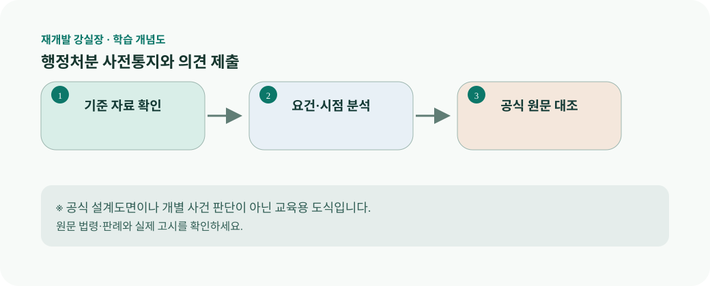

행정처분 사전통지와 의견 제출 강의 슬라이드재개발 강실장 · 교육 콘텐츠 / 개별 감수 전행정처분 사전통지와 의견 제출
권익을 제한하는 처분은 행정절차법상 사전통지가 문제 될 수 있으나 예외와 특별법 규정이 있다.
학습 개념도

법적 효력을 갖춘 공식 도면이 아닌 교육용 도식입니다.
1 / 7오늘의 핵심 쟁점
권익을 제한하는 처분은 행정절차법상 사전통지가 문제 될 수 있으나 예외와 특별법 규정이 있다.
2 / 7법조문을 읽는 순서
도시 및 주거환경정비법 제124조(관련 자료의 공개 등)을 출발점으로 읽습니다. 조문의 주어와 행위, 요건, 예외를 나누어 표시한 뒤 적용일과 지자체 조례·정관·인가 조건을 별도로 대조합니다. 같은 정비사업이라도 사업유형과 진행 단계가 다르면 결론이 달라질 수 있습니다.
3 / 7현장형 가상 사례
의견 제출 기회를 받았을 때 사실관계·근거문서·보완 요구를 항목화한다. 사례는 개인이나 특정 조합을 지칭하지 않는 학습용 가정입니다.
4 / 7문서를 보는 실무 방법
문서명을 고시·처분·회신으로 분류한다. 특히 서로 다른 시점의 자료는 덮어쓰지 말고 원본을 보존합니다. 사실 확인 항목에는 근거 문서의 작성기관·작성일·공식 URL을 함께 적습니다.
5 / 7자료 체크리스트
우선 확보할 자료는 사전통지서, 의견제출서 접수증, 처분서입니다. 개인정보와 비공개 사업정보는 권한과 공개 범위에 맞게 취급하고, 확인되지 않은 증빙은 별도 표기합니다.
6 / 7자주 범하는 오류
모든 행정행위에 같은 절차가 필수라고 일반화하지 않는다. 단순한 불만이나 비용 차이가 곧바로 형사범죄 또는 무효 사유가 되는 것은 아닙니다.
7 / 7강실장의 핵심 정리
이 강의의 도식은 “공적 문서 읽기”입니다. 작성·통지·공개·처분을 분리한다. 사건마다 특별법과 개인정보 제한을 확인해야 한다. 글은 교육용이며 소장·고소장 등의 구체적 사건별 문서를 작성해 주지 않습니다.